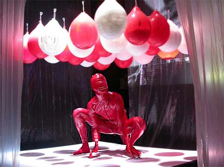
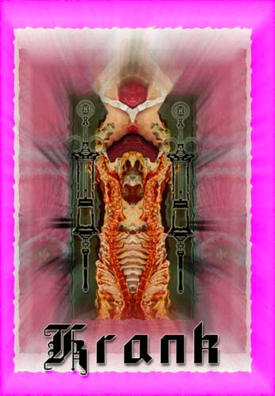

| Private Parts | 13. August - 2005 | |
 |
||
Guest performer:
multimedia-performance "Hackfleisch" by Krank - Berlin description: "Krank" is Marek-Berlin & Laninger, two fucked-up artists from Berlin who want to enchant the crowd. The german scifi-familiy persuades the audience to enter into the depth of their intoxicated minds. websites: www.krank-berlin.de www.marek-berlin.de www.laninger.de 2. VJ Laninger (Krank - Berlin) description: Laninger arranges animated collages out of pieces of photography and film. bizarre protagonists celebrate sacred cult and delusive perception, stressing the mystical aspects of these visual worlds. websites: www.laninger.de www.krank-berlin.de |
||
 |
||